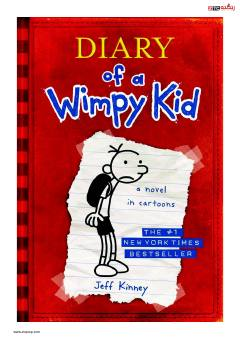

DOO'rta maktab o'quvchisi Greg Heffleyning kulgili va qiziqarli kundalik yozuvlari.
Greg Heffley o'rta maktabdagi qiyinchiliklar va tengdoshlari bilan bo'lgan munosabatlarini o'zining kundaligida kulgili tarzda tasvirlaydi. Bu kitob o'smirlik davridagi kundalik hayot va maktabdagi sarguzashtlar haqida hikoya qiladi.